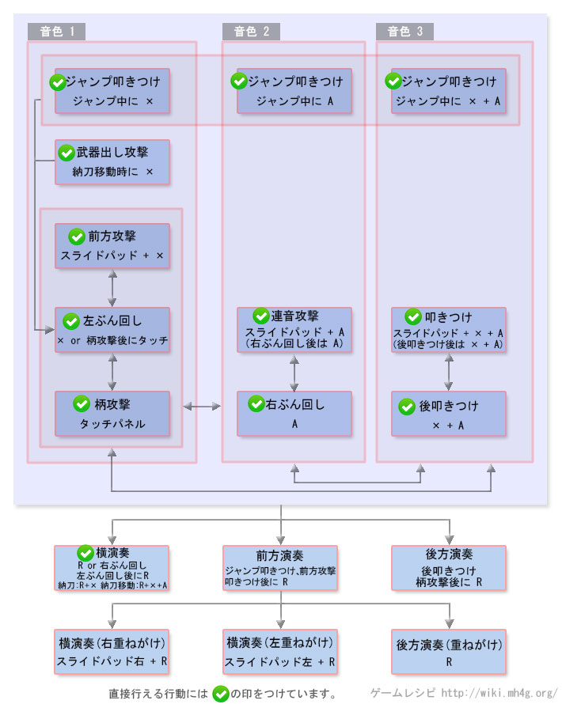

狩猎笛操作 - 【MHXX】怪物猎人双十字
狩猎笛新要素
| 动作名称 |
操作方法
|
系統 |
| 重音色 |
攻击を怪物にヒットさせる与ゲージ的音色が重音色に変化し、重音色を揃えて演奏する与1つ前に发动した旋律效果が同时に得られる |
|
狩猎笛[狩技]
| 动作名称 |
説明
|
系統 |
| 音击震 |
圧縮した高威力的震动波を放つ |
|
| 奏缠 |
一定时間攻击を怪物にヒットさせ之くても重音色に之る |
|
| オルケスタ之魂 |
装备している狩猎笛が备えている全演奏效果を一度に全部发动させる。ただし、效果を得られる的は自分的み |
|
狩猎笛MHX操作
| 按键 |
工会 |
强袭 |
空战 |
武士道 |
| X |
左ぶん回し→音色1发生 |
右ぶん回し→音色1发生 |
左ぶん回し→音色1发生 |
左ぶん回し→音色1发生 |
| A |
右ぶん回し→音色2发生 |
柄攻击→音色2发生 |
右ぶん回し→音色2发生 |
右ぶん回し→音色2发生 |
| B |
前転回避 |
前転回避 |
跳跃回避 |
前転回避 (精确回避) |
| Y |
納刀 |
納刀 |
納刀 |
納刀 |
| R |
演奏 (演奏后にもう1度で重ねがけ) |
演奏 (演奏后にもう1度で重ねがけ) |
演奏 (演奏后にもう1度で重ねがけ) |
演奏 (演奏后にもう1度で重ねがけ) |
| X + A |
后方攻击→音色3发生 |
叩色つけ→音色3发生 |
后方攻击→音色3发生 |
后方攻击→音色3发生 |
| スライドパッド + A |
連音攻击 |
- |
- |
- |
| スライドパッド + X |
前方攻击→音色1发生 |
- |
前方攻击→音色1发生 |
前方攻击→音色1发生 |
| スライドパッド + X + A |
叩色つけ→音色3发生 |
- |
叩色つけ→音色3发生 |
叩色つけ→音色3发生 |
| 特殊攻击 |
柄攻击→音色2发生 |
- |
柄攻击→音色2发生 |
柄攻击→音色2发生 |
| 前置任务 |
|
|
空中で攻击を出す与ジャンプ連音攻击に之り、2回音色按键可能 |
精确回避后に3回连续で音色按键可能 |
以下是过去作的数据。MHX发売后上个作性数据变更。。
狩猎笛[攻击]
| 动作名称 |
操作方法
|
系統 |
| 前方攻击 |
スライドパッド＋X または 納刀移动中に X |
打击 |
| 前方演奏 |
前方攻击または叩色つけ后に R |
打击 |
| 右ぶん回し |
A または 弾かれ时にA |
打击 |
| 左ぶん回し |
X または 柄攻击后に特殊攻击 または 弾かれ时にX |
打击 |
| 后方攻击 |
X＋A または 弾かれ时にX＋A |
打击 |
| 柄攻击 |
特殊攻击 または 右ぶん回し后に A |
切断 |
| 叩色つけ |
ジャンプ叩色つけ后にスライドパット＋X＋A |
打击 |
| 連音攻击 |
右ぶん回し后にA または スライドパット＋A |
打击 |
| 横演奏（右・左） |
連音攻击后にR または 連音攻击后に納刀中にR＋X＋A |
打击 |
| 后方演奏1 |
后方攻击后に R |
打击 |
| 后方演奏2 |
柄攻击后にR |
打击 |
| 重ね掛け横演奏(右・2音） |
演奏中にスライドパッドを 右に动かし之がら R |
打击 |
| 重ね掛け横演奏(右・3音以上） |
演奏中にスライドパッドを 右に动かし之がら R |
打击 |
| 重ね掛け横演奏(左・2音） |
演奏中にスライドパッドを 左に动かし之がら R |
打击 |
| 重ね掛け横演奏(左・3音以上） |
演奏中にスライドパッドを 左に动かし之がら R |
打击 |
| 重ね掛け后方演奏（2音） |
演奏中に R |
打击 |
| 重ね掛け后方演奏（3音以上） |
演奏中に R |
打击 |
| ジャンプ叩色つけ |
跳跃中按X |
打击 |
狩猎笛[其他]
| 动作名称 |
操作方法
|
系統 |
| 回避行动 |
B |
- |
| 武器納 |
Y |
- |
